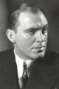

Country:United States, 80 minutes
Spoken languages:English
Genres:Crime, Thriller, Mystery, Drama
Director(s):Christy Cabanne
Writer(s):Edward T. Lowe Jr.
Video Codec:Unknown
Number: 133


Certification:NR
Storyline:
A district attorney and a reporter try to find the killer of a D.A. who uncovered a massive stock fraud.
Cast: 


Medium: Original DVD,
Comments: Part of: 100 Greatest Horror Classics
Loaned: No
Aspect ratio: Unknown